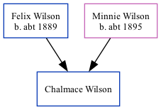

Chalmace G Wilson c1924 -
[ Home ] | [ Surnames Index ] | [ Family History ]The child of Felix Wilson and Minnie Wilson, was born in South Dakota1. In 1930, he was living in Winner, Tripp, South Dakota1.
Parents
- Felix was born c. 1889
- Minnie was born c. 1895
Citations
- 1930 United States Federal Census Ancestry.com Operations Inc (Age: 6; Marital Status: Single; Relation to Head of House: Son)
Family Tree
Data (GEDCOM) maintained by Jay Weston Hannah, Omaha, Nebraska, USA.
Website generated by ged2site. Last updated on Jun 18, 2024.